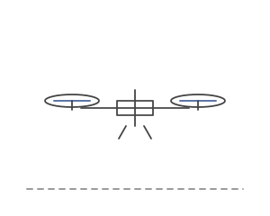

Taiwan
Entry 008: A drone that lands when I make a fist
- When
- Taiwan
- Hardware
- DJI Tello, controlled from Python
- It followed me using head and body tracking.
- Making a fist made it land.
- Opening my hand made it take off.
This was the head-tracking idea from the 6DOF arm again, except now it flew.

it follows you. click to make a fist.
[video coming]